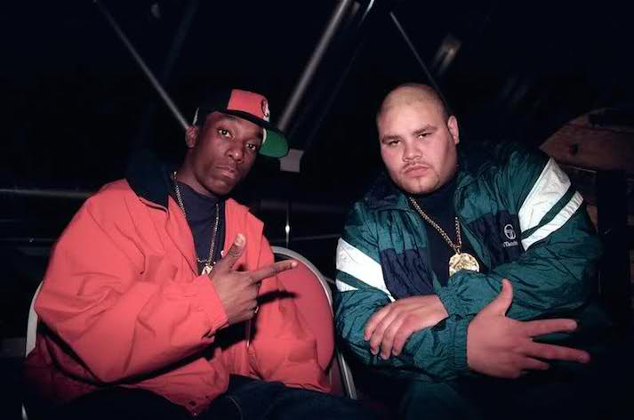
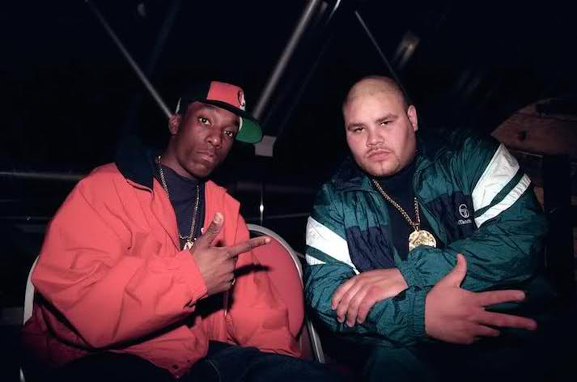

Lamont Coleman (May 30, 1974 – February 15, 1999), better known by his stage name Big L, was an American rapper.
Coleman is widely regarded as one of the greatest and most lyrical rappers of all time, noted for his use of wordplay.
Damon Dash wanted to sign Lamont to Roc-A-Fella, but Coleman wanted his crew to sign. On February 8, 1999, Coleman, Herb McGruff, C-Town, and Jay-Z started the process to sign with Roc-A-Fella Records as a group called "The Wolfpack".
Unfortunately, he was a gunned down on February 15th, 1999 while handing out flyers to announce this life altering news. It was said to be revenge for a plot Big L's older brother Lee conjured up and ordered from prison. Some say he was a completely innocent casualty, others say he involved himself in the plot out of loyalty to his brother.
In either case, below is an hour-long documentary on his neighborhood and how it ultimately consumed him.
He was a major influence on a lot of battle rappers in the 90s. A lot of the best all time lyricists knew him and were well aware of his potential.
Children of the Corn was a group managed by Damon Dash featuring the following members: